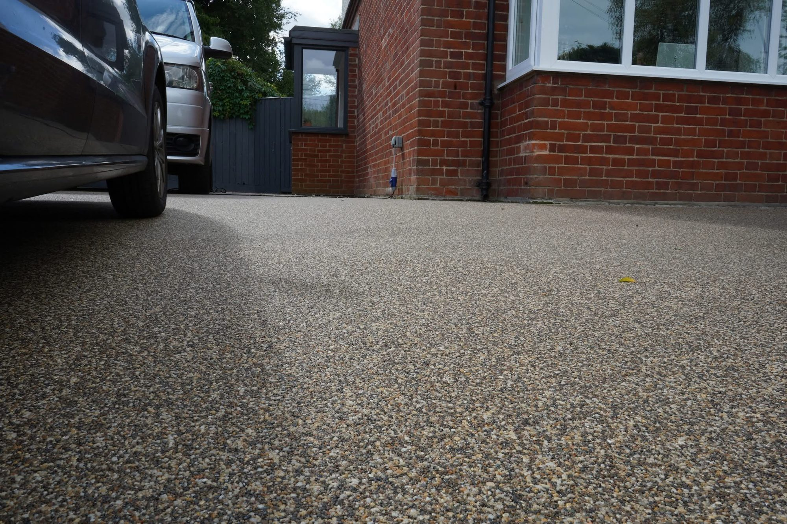
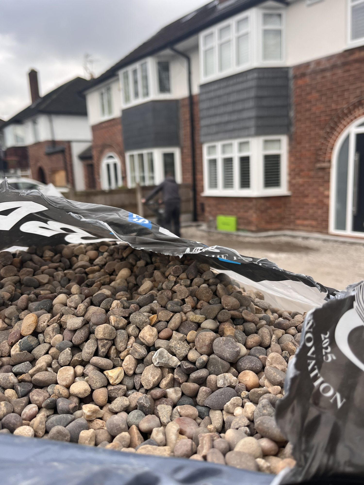

Need groundwork for your project?
Get a fixed quote, free — no obligations.
We assess your ground conditions during the free survey and include all groundwork in one clear, fixed price.

Sub-Base & Drainage • Cheshire & North Wales
★★★★★ 5/5 on Google · Approved Vuba Installer · 15 years construction experience
Groundwork Preparation
A resin driveway is only as good as the base underneath it. That’s why we take groundwork seriously. With 15 years of construction experience, we prepare every sub-base to engineering standards — so your surface stays flat, stable and crack-free for decades.
We dig out the existing surface and dispose of waste responsibly. Whether it’s old tarmac, concrete, gravel or turf, we clear it properly to reach solid ground.
We lay and compact a type 1 MOT sub-base in controlled layers to create a stable, load-bearing foundation for the resin surface above.
We assess drainage requirements on site and install channel drains, ACO drains or soakaways where needed to manage water flow and prevent flooding.
Proper edge restraint is essential. We install aluminium edging, brick borders or kerbing to contain the resin and define the driveway shape.
We use precise laser measurement to set falls and levels accurately, ensuring water runs in the right direction and the surface sits perfectly flat.
We’re not just resin installers. With 15 years in construction, we have the skills and knowledge to handle any ground condition we encounter.
Real Installations
All surfaces shown are genuine resin bound installations — the Vuba colours and finishes we bring to every job across Cheshire.






Client Feedback
★★★★★
I had my driveway done after seeing them complete the British Legion project in Penyffordd. I couldn’t fault them or recommend them enough — it looks amazing!
— Laura Halstead
★★★★★
They upgraded our back garden, front driveway and pathways. The resin quality is brilliant and drains perfectly — no surface water whatsoever. The team were hard working, on time and polite throughout. Can’t recommend them enough!
— Richard Hughes
★★★★★
Fantastic job from start to finish. They helped us choose the right colours, communication was excellent, and they went above and beyond. The driveway looks incredible and really makes a difference to our house.
— Kimberley Ravazzolo
Common Questions
It depends on the condition of your existing base. If you have solid, stable tarmac or concrete, we can often resurface directly over it. Full excavation is required when the sub-base is failing, drainage is poor, or significant levels need correcting. We assess this during your free survey.
For most driveways we compact 150–200mm of MOT Type 1 hardcore as the sub-base. The exact depth depends on ground conditions, vehicle loading and whether any existing material can be retained — all assessed during the free survey.
Yes. Where channel or ACO drainage is needed, we include it as part of the groundwork scope. Resin bound surfaces are also inherently permeable, so surface water drains through the resin itself, keeping your driveway SuDS-compliant.
Groundwork preparation typically takes 1–2 days, followed by the resin layer once the sub-base is set. Total project time is usually 2–4 days depending on driveway size.
Yes. We survey your ground conditions during the free site visit and include all excavation, sub-base, edging and drainage in one clear, fixed-price quote. No hidden extras.
Need groundwork for your project?
We assess your ground conditions during the free survey and include all groundwork in one clear, fixed price.